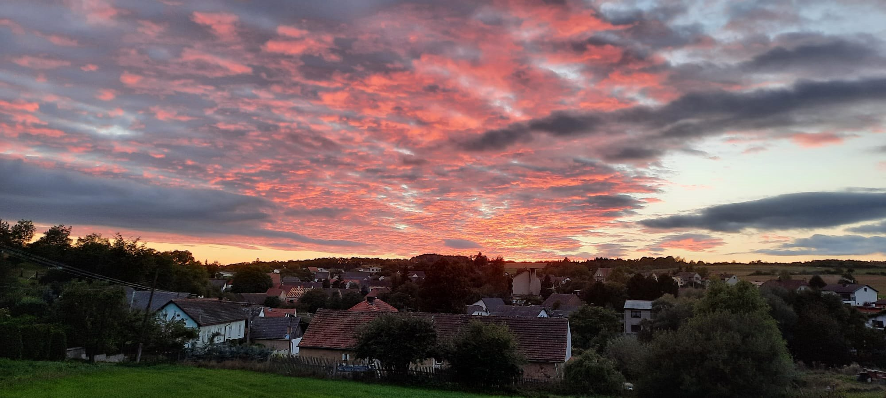
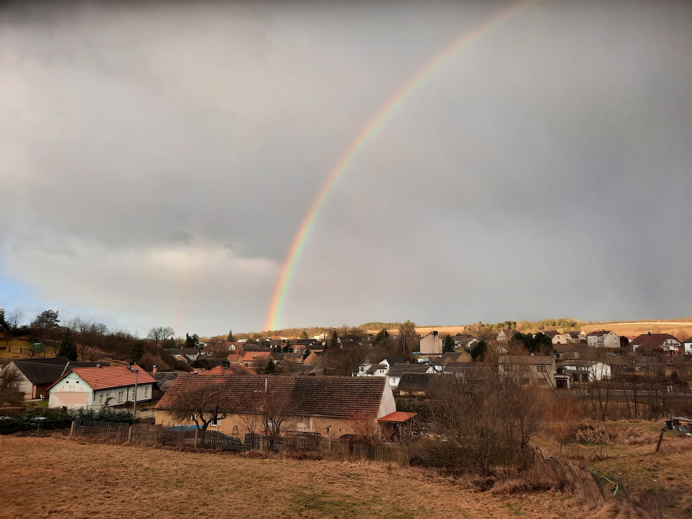
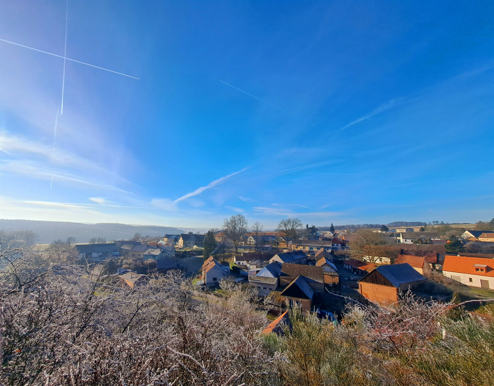

Plasko · poprvé zmíněna 1175
Babina
Historie obce v obrazech a pramenech.
Historie obce jihovýchodně od Plas
Objevovat01 · Krajina a počátky
Poloha, původ názvu a první písemná zmínka.
Babina leží tři kilometry jihovýchodně od Plas, pod prameništěm Nebřezinského potoka. Její jméno se podle archivního inventáře odvozuje od osobního jména Bába — znamenalo tedy Bábovu vesnici.
První písemná zpráva pochází z roku 1175. Kníže Soběslav II. tehdy daroval Babinu spolu s Oborou a Koryty plaskému cisterciáckému klášteru. Obec tak byla dlouhodobě spojena s plaským panstvím.
- 1175
- první písemná zmínka
- 407 m
- nadmořská výška
- 15,98 km²
- rozloha katastru
- 3 km
- jihovýchodně od Plas

02 · Devět století
Dějiny v datech
Výběr doložených událostí od první písemné zmínky po vybudování školy a elektrifikaci obce.
-
1175
Ves plaského kláštera
Soběslav II. věnuje Babinu plaskému cisterciáckému klášteru. Nejstarší známá písemná zpráva otevírá téměř devět století zaznamenané historie.
-
1839
Nová mapa katastru
Při tvorbě stabilního katastru jsou k Babině připojeny rozsáhlé lesní pozemky včetně téměř celého polesí Čečín a části Olšan.
-
1850
Samostatná obec
Po zrušení patrimoniální správy se Babina stává samostatnou obcí v soudním a politickém okrese Kralovice. Úřad sídlí vždy v domě právě úřadujícího starosty.
-
1892
Cesta do Plas
Zápisy obecního zastupitelstva z roku 1892 podrobně zachycují výstavbu okresní silnice mezi Babinou a Plasy. Železniční spojení přes Plasy nabízelo obyvatelům pracovní možnosti mimo obec už od sedmdesátých let 19. století.
-
1909
Voda pro obec
Z Močidel přivádí samočinný vodovod vodu do vodojemu a odtud do stavení. Jeho potrubí měří 1 200 metrů.
-
1910–12
Hasiči a strojní cihelna
Vzniká sbor dobrovolných hasičů. O dva roky později je vybudována strojní cihelna; její provoz končí ve třicátých letech jako nerentabilní.
-
1934–35
Vlastní škola
V letech 1934–1935 je postavena školní budova čp. 64. Do té doby docházely babinské děti do školy v Plasích.
-
1939
Rozsvítila se Babina
Západočeské elektrárny za přispění obce dokončují elektrifikaci.
03 · Obrazový archiv
Život zachycený na fotografiích
Výběr z dochovaného fotografického souboru je uspořádán do čtyř tematických okruhů.
Dochované fotografie nejsou ve všech případech přesně datované ani opatřené původním popisem. Popisky proto pojmenovávají zachycenou scénu a nedoplňují neověřené okolnosti.

04 · Babina dnes
Současná Babina
Babina je dnes místní částí města Plasy. Aktuální údaj o počtu obyvatel vychází z oficiálního přehledu města.
k 1. 1. 2026
05 · Prameny
O obsahu a ověření
Tato digitální kronika je obsahovou kompilací vytvořenou s podporou AI z dodaných fotografií a textových podkladů. Historické údaje byly kontrolovány proti archivnímu inventáři, záznamu NPÚ, digitálním kronikám a oficiálním údajům města Plasy.
-
01
↗
Archiv obce Babina 1870–1945 (1950)
Kateřina Nová, Petr Hubka, Zuzana Kliková; Státní oblastní archiv v Plzni, 2009.
-
02
↗
Babina — historický intravilán
Státní archeologický seznam ČR, Národní památkový ústav.
-
03
↗
Digitální kroniky Babiny
Pamětní knihy obce a školy ve veřejném portálu Porta fontium.
-
04
↗
Babina — oficiální stránky města Plasy
Aktuální údaje o obyvatelstvu a správě místní části.